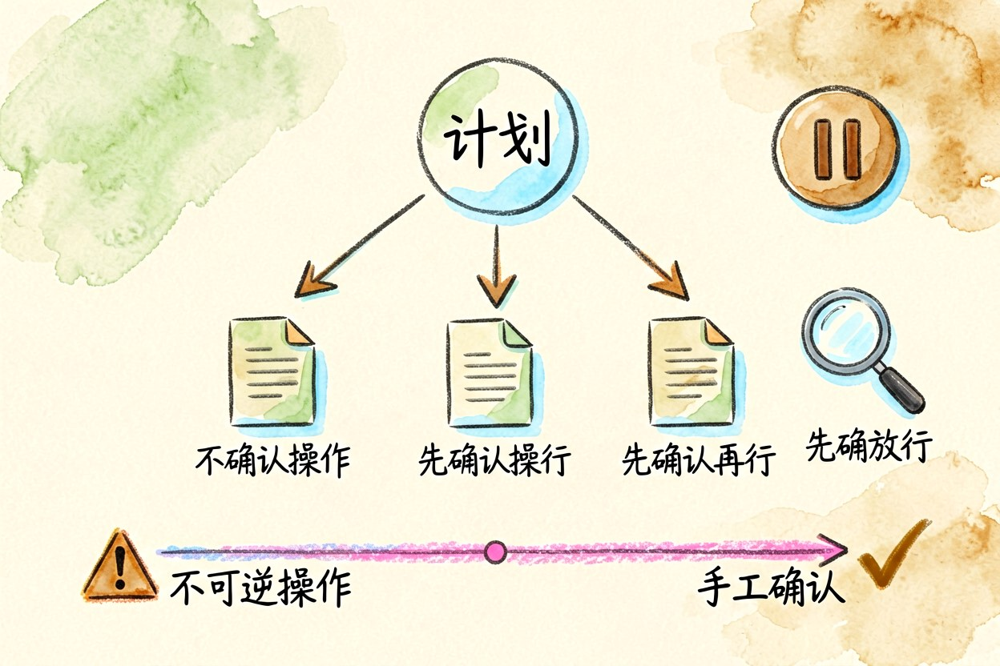
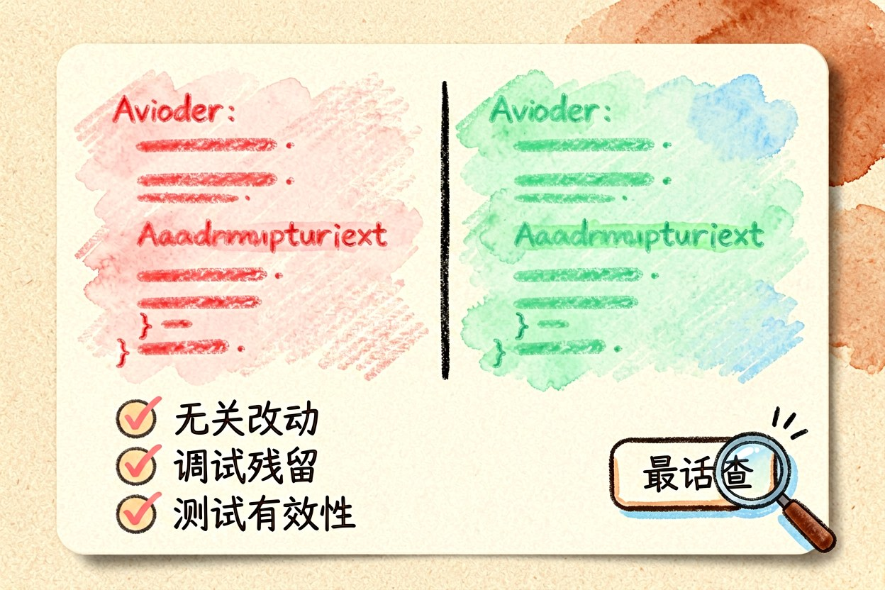

命令行 AI 编程入门：从装好到提交的五个动作
把整个仓库交给一个会执行命令的助手，省下的不是打字时间，而是来回翻找文件的那部分注意力。
命令行AI编程工具把助手从编辑器侧栏挪到了终端里。它最大的不同是能自己执行命令、读文件、跑测试，所以给出的不是一段建议代码，而是一次真实的改动。能力变大，用法也就跟着变。
命令行AI编程和编辑器的区别
编辑器里的补全围绕光标工作，一次处理几十行。终端里的助手围绕任务工作，一次可能翻十几个文件、跑好几条命令。前者快，后者深。日常补全仍交给编辑器，涉及跨文件重构、排查报错、补测试这类任务时，再切到终端。判断标准很简单：需要看多个文件的活，交给终端里的助手更划算。
二、装好之后先做三件事
第一，确认它在仓库根目录启动，否则它看不到完整结构。第二，配一份项目说明文件，写清技术栈、启动命令和代码规范，这份文件决定了它第一次输出的质量。第三，把敏感配置加入忽略清单，避免它读到密钥。三件事十分钟能做完，能省掉后面大量纠正。
cd /path/to/project # 必须在仓库根目录启动
git status # 先确认工作区干净
git checkout -b feat/task # 每次任务开一个新分支三、任务描述怎么写才管用
把要求写成三句：现在是什么行为、期望变成什么行为、怎样算完成。附上具体的文件路径和报错原文。反例是"帮我优化一下这个项目"，它只能回给你泛泛的建议。正例是"上传接口在文件名含空格时返回 500，期望正常保存，日志已贴在下面"。描述里带上验收方式，它自己就会去跑对应测试。信息给得越具体，来回追问的次数越少。
四、让它先给方案再动手

复杂任务先要一份改动计划，看清楚它打算动哪几个文件、为什么。计划里出现你没预期的文件，多半是它误解了范围，这时纠错成本最低。确认之后再放行。涉及数据库迁移、批量重命名这类不可逆操作，务必先让它输出将要执行的命令，由你手工确认。计划写不清的任务，通常说明需求本身还没想明白。先想清楚，再动手。
五、提交前必须自己过一遍

逐条看差异，重点看三处：有没有顺手改掉无关代码、有没有把调试输出留在里面、有没有把测试写成了永远通过的写法。跑一遍完整测试，再跑一次真实场景。工具能替你把活干完，但替不了你签字。看不懂的差异，先别提交。改动如果超过几百行，宁可拆成几次提交，出问题时也容易定位。
命令行AI编程的正确姿势，是把它当成一个动作很快但需要复核的同事。别在没看差异的情况下直接提交，也别把生产环境的凭据交给它，边界画清楚，效率才是真的提升。
本文信息核对于 2026-09-14。AI 产品的价格、免费额度与功能变动频繁，实际以各工具官网当前说明为准。